Agentic Accelerated Discovery
Using Coding Agents in the Lab
Roee Amit Lab
Faculty of Biotechnology and Food Engineering
Technion Israel Institute of Technology
Mattan Hoory
1 Agents
1.1 Definition
agent/ˈeɪ.dʒənt/noun
- A person who acts on behalf of another.
- (computing) A program that pursues a goal by choosing actions, carrying them out and observing their results, until the goal is reached.
An agent is anything that can be viewed as perceiving its environment through sensors and acting upon that environment through actuators. Russell and Norvig, Artificial Intelligence: A Modern Approach
1.2 A chatbot answers, an agent acts
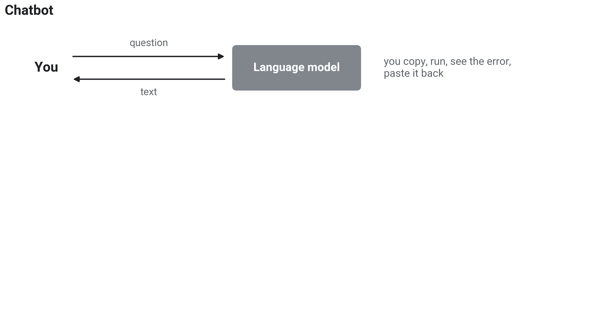
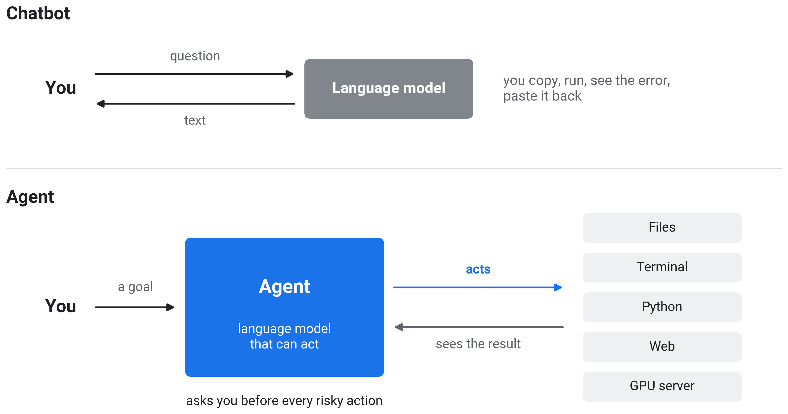
1.3 Model and harness
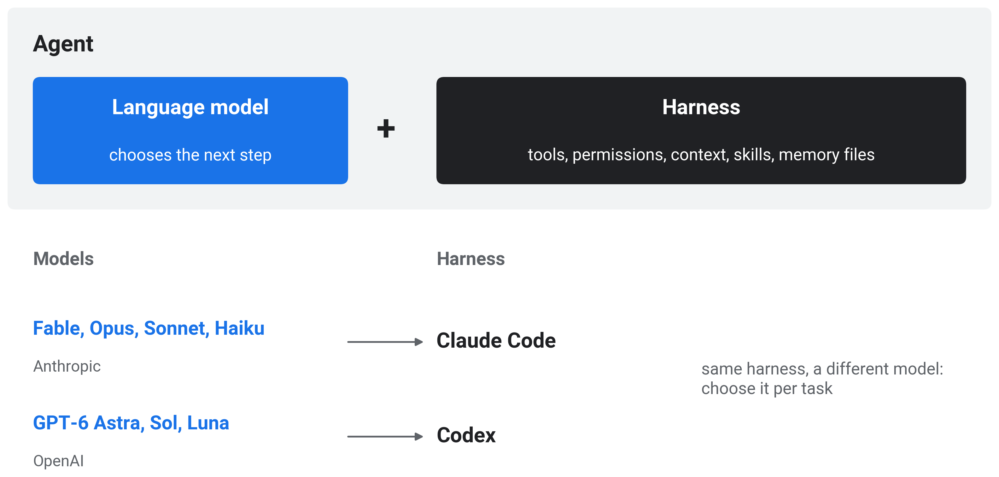
1.4 The models
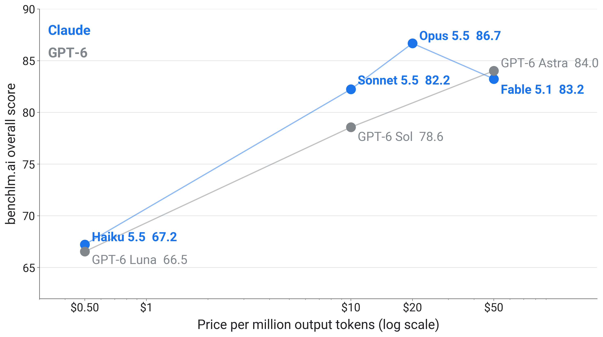
1.5 The agent loop
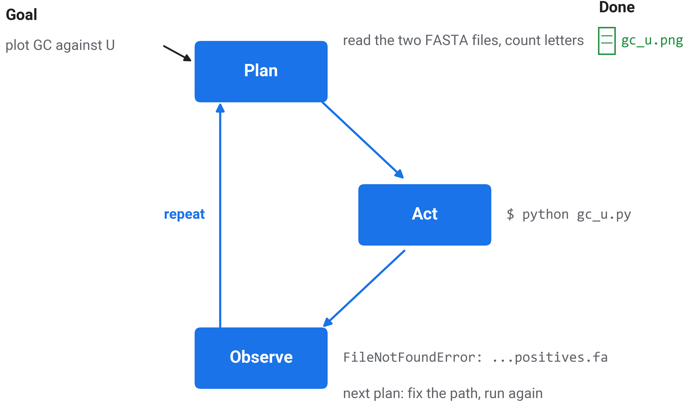
1.6 You stay in control
- Permissions: the agent asks before it runs a command or edits a file; allow once, always, or deny
- Plan mode: the mode menu under the prompt box; the agent only reads and proposes until you accept its plan
- One folder per project: the agent works where you open it
- Read what it did: each command and each changed file is shown
1.7 Git is the undo button
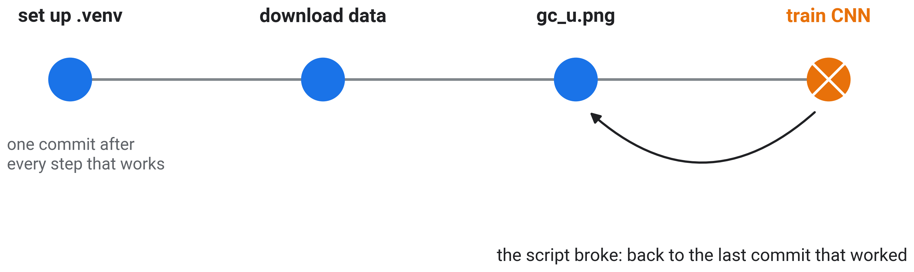
2 First Task
2.1 Set up
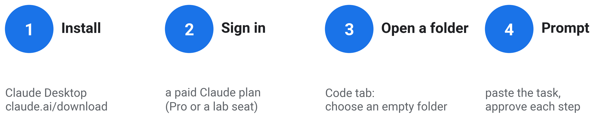
- Data: huggingface.co/datasets/yup8/ai-days-2026-ago2, AGO2 binding sites and unbound RNA
2.2 The prompt
PASTE INTO THE CODE TAB NOW
I am new to coding agents. Work step by step and tell me briefly what you do.
Make this folder a git repository and commit after each step that works.
Goal: one scatter plot of the AGO2 RNA dataset.
1. Set up a Python environment with numpy and matplotlib in .venv
(Windows: py -m venv .venv, then .venv\Scripts\python -m pip install ...; macOS: python3 -m venv .venv).
2. Download the two training files (FASTA; letters can be lower case, some sequences use T for U):
https://huggingface.co/datasets/yup8/ai-days-2026-ago2/resolve/main/CLIPSEQ_AGO2.train.positives.fa (bound)
https://huggingface.co/datasets/yup8/ai-days-2026-ago2/resolve/main/CLIPSEQ_AGO2.train.negatives.fa (unbound)
3. For each sequence: GC fraction = (G + C) / length, U fraction = (U + T) / length.
4. Plot GC fraction (x) against U fraction (y): 5,000 random sequences per group (seed 0), bound in blue,
unbound in grey, small transparent dots, drawn in random order. Do not open plot windows.
5. Save the plot as gc_u.png and tell me in two sentences whether the groups differ.2.3 Anatomy of a prompt
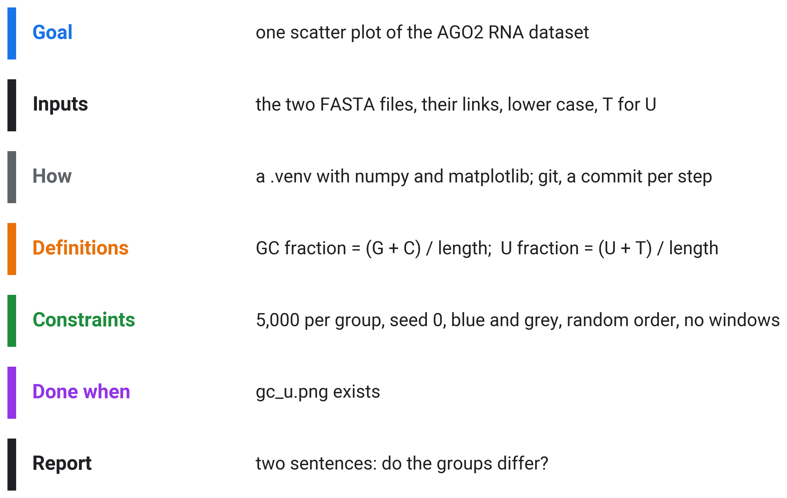
2.4 Why this task first
- Small: one script, under a second of compute
- Every agent ability: environment, download, parsing, code, running, a file you can see
- Checkable by eye: a wrong plot looks wrong
- A known answer: bound sequences have less GC and more U
2.5 What you should get
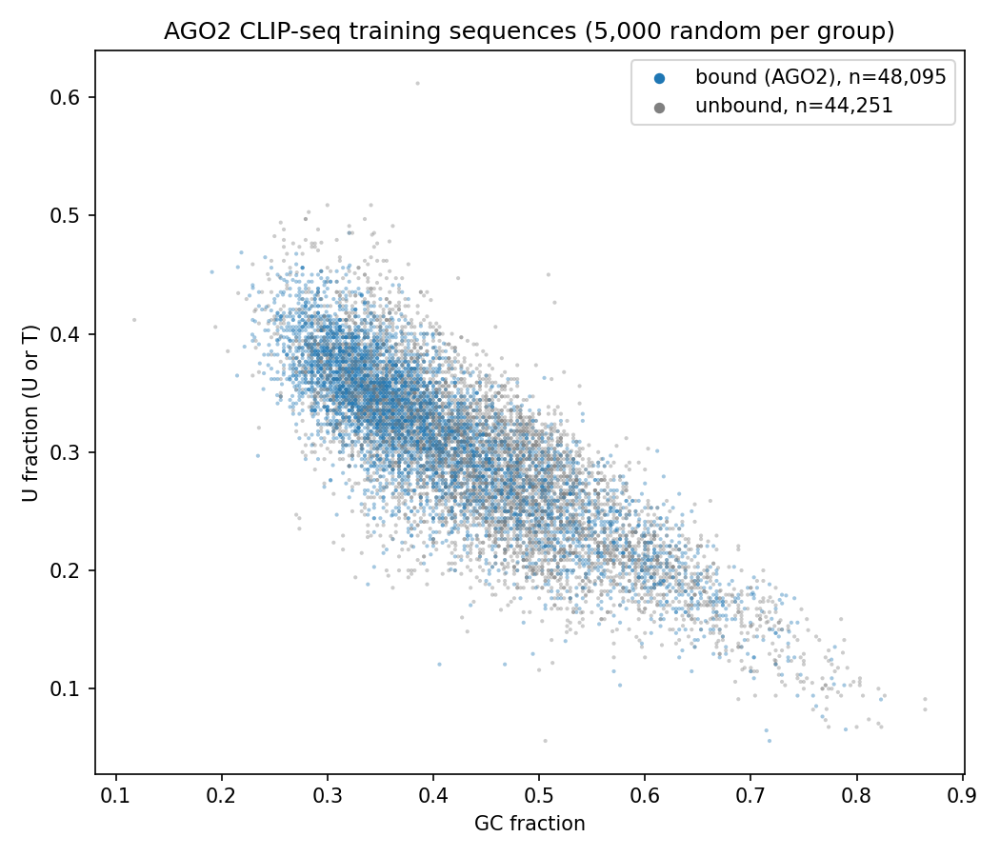
3 Skills
3.1 What a skill is
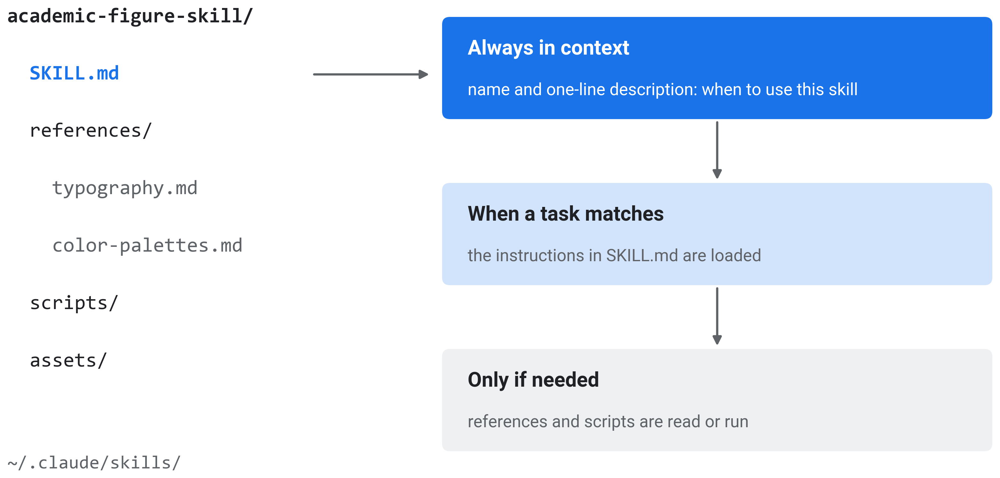
3.2 Not in the prompt, the agent decides
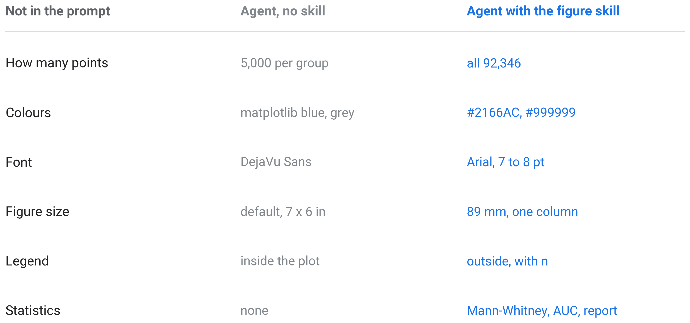
3.3 Our lab’s skills
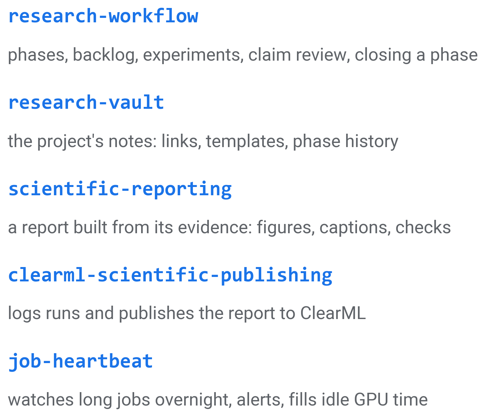
3.4 Install one
ASK YOUR AGENT
- Asking for a summary first is the habit: a skill is instructions the agent will follow, and some include scripts it runs
3.5 Second task: a CNN, reported with the skill
PASTE INTO THE SAME FOLDER
Second task: train a small neural network on the AGO2 data, on this computer's CPU.
First show me your plan and wait for my OK. If anything is unclear, ask me before writing code.
Data: https://huggingface.co/datasets/yup8/ai-days-2026-ago2/resolve/main/<file>, FASTA, lower case allowed, T means U.
Training: CLIPSEQ_AGO2.train.positives.fa, CLIPSEQ_AGO2.train.negatives.fa (download any you do not have)
Held-out test (1,000): CLIPSEQ_AGO2.ls.positives.fa, CLIPSEQ_AGO2.ls.negatives.fa
1. Install the CPU build of PyTorch into .venv: pip install torch --index-url https://download.pytorch.org/whl/cpu
2. One-hot encode each sequence: 4 rows (A, C, G, U) by 501 columns; other letters and columns after the end are 0.25.
3. Network: Conv2d(1, 10, (4, 10)), ReLU, MaxPool2d((1, 3)), Conv2d(10, 20, (1, 5)), ReLU, MaxPool2d((1, 3)),
Flatten, Linear(1060, 1).
4. Train 10 epochs: Adam, learning rate 0.001, shuffled batches of 256, BCEWithLogitsLoss, seed 0.
Print the seconds per epoch and the held-out AUROC after each epoch.
5. Control: train again with the training labels shuffled and report its AUROC.
6. Use the academic-figure-skill for the figures: AUROC against epoch, and gc_u.png redrawn.
7. Write report.md (what you did, every number with the command that produced it) and CLAUDE.md
(how to set up, run and check this project). Commit after each step that works.3.6 The same plot, with the skill
Without the skill
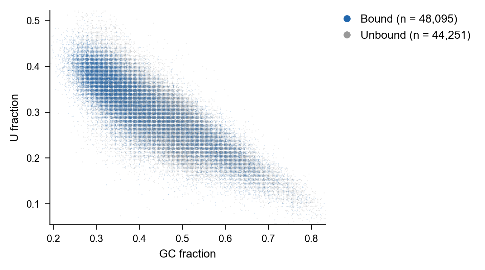
With the academic figure skill
3.7 What to expect
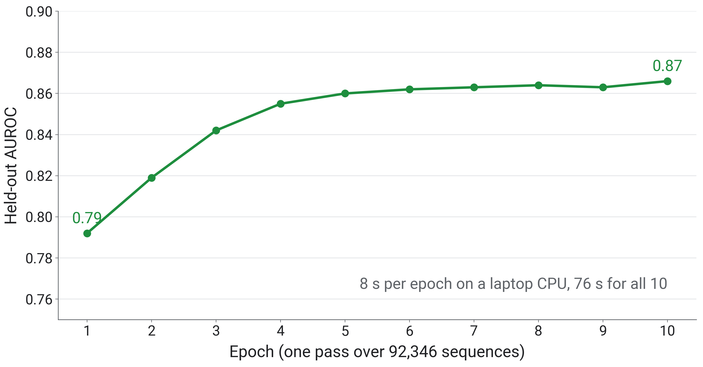
3.8 Check its work
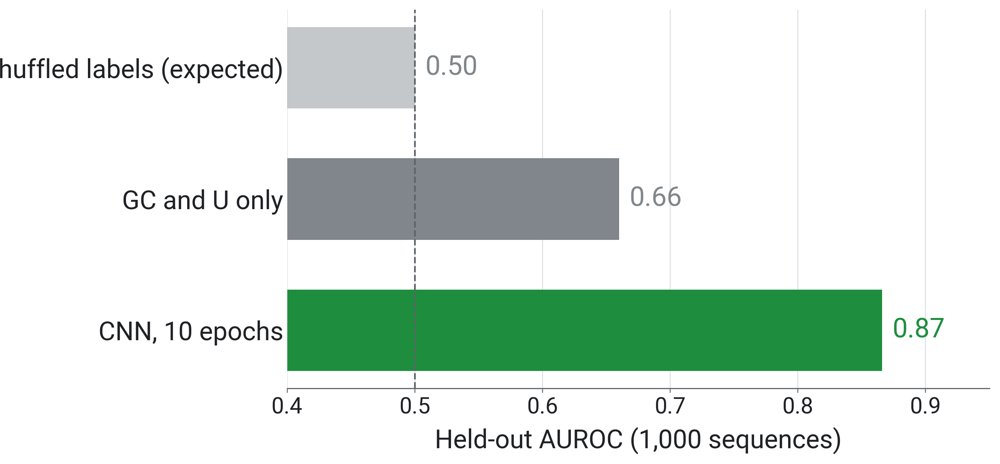
- Show me the command and its output for every number in the report
4 Context
4.1 The context window
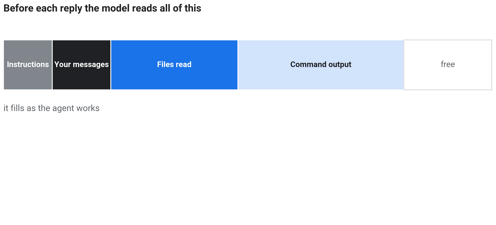
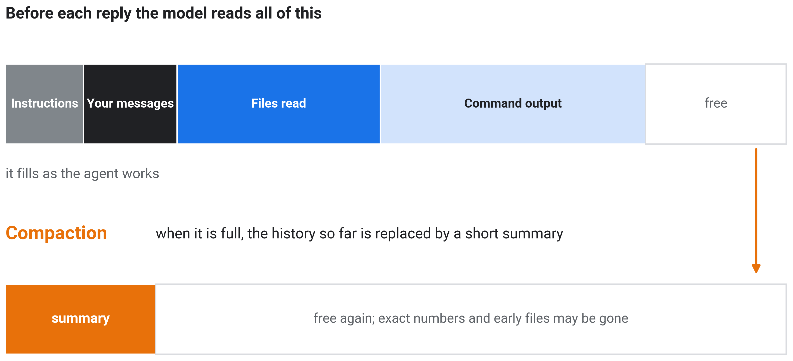
- Long sessions get slower and less accurate; start a new session for a new task
4.2 Subagents and new sessions
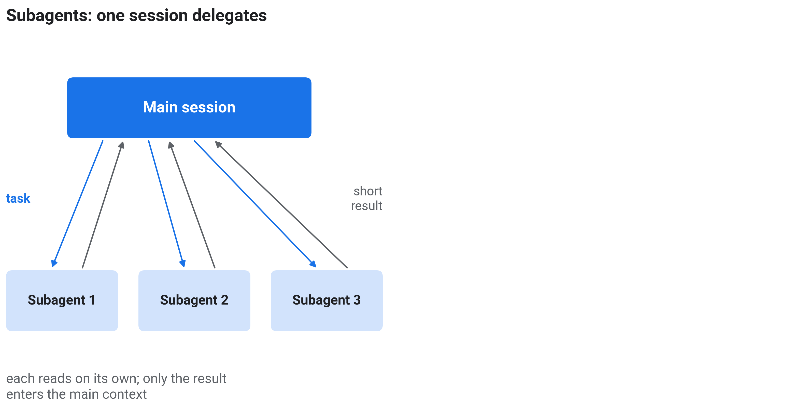
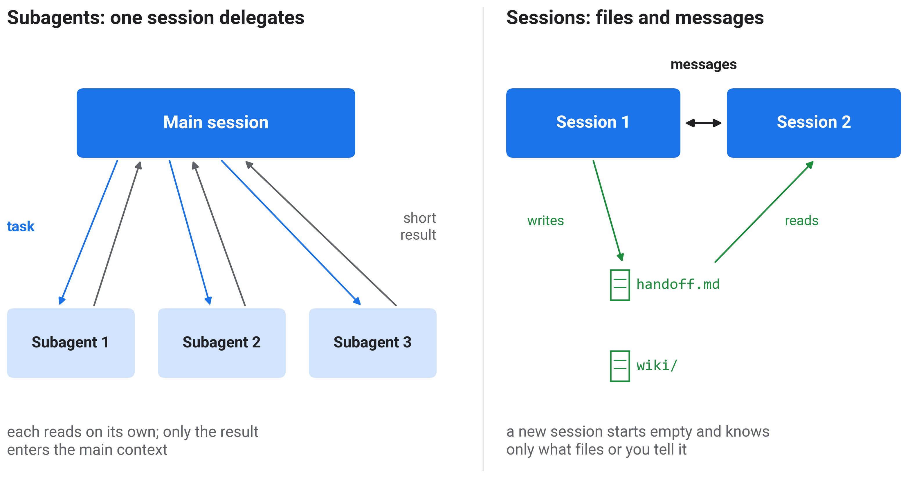
4.3 Example: a literature review
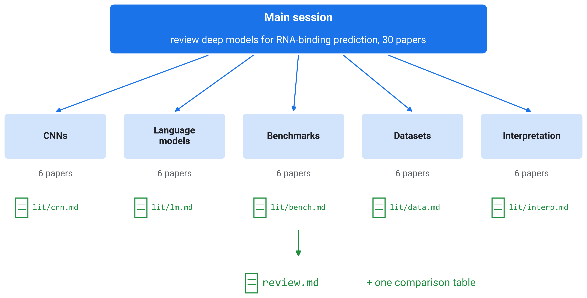
- Check that every cited paper exists and says what the notes claim
4.4 When it goes in circles
- Esc stops it at once
- Rewind, or start fresh: a new session with what was tried and what failed
- Three hypotheses first: “list three possible causes and how to test each, before you edit anything”
- Raise the effort for this one problem
- After three failed fixes, stop and think yourself
5 Effort and Limits
5.1 Reasoning effort
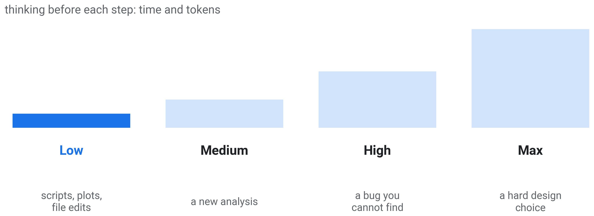
- Lower is faster, and enough for most lab work; raise it when it is stuck
5.2 Limits, and when not to use an agent
- Usage limits: a seat has a budget per few hours and per week; large models and subagents use it faster
- Not when you cannot check the result
- Not for sensitive data without a decision (section 7)
- Not for a one-line change you already know
- Not when the point is to learn it yourself
6 Working with Agents
6.1 Work in phases
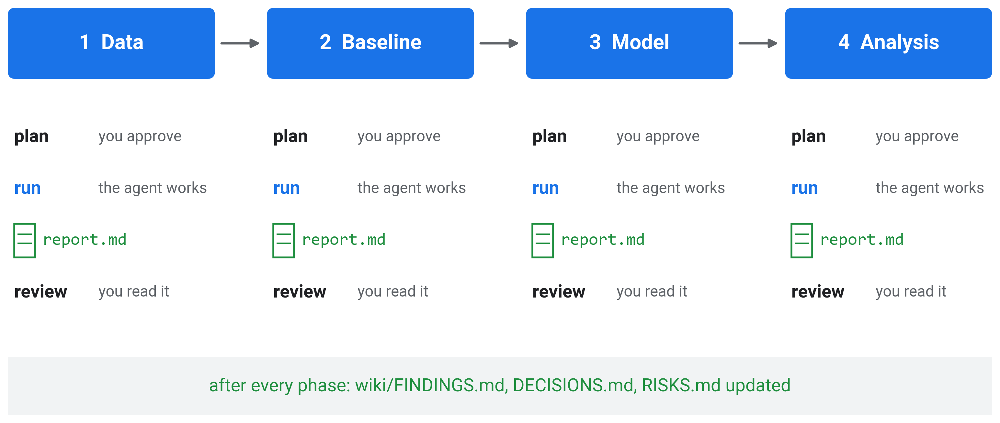
6.2 A shared wiki
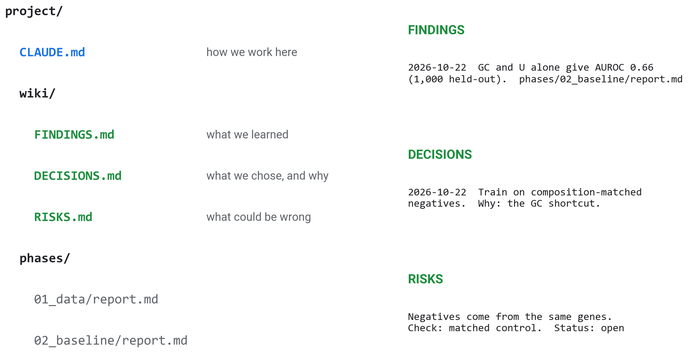
6.3 CLAUDE.md: the lab template
CLAUDE.md, READ AT THE START OF EVERY SESSION
# Project: <one line: the question>
## Layout
data/raw/ read-only: never modify or delete
data/derived/ produced by scripts in src/
wiki/ FINDINGS.md, DECISIONS.md, RISKS.md: update at the end of every phase
phases/NN_name/ plan.md and report.md per phase
## How to run
.venv/bin/python src/train.py --config configs/<name>.yaml
## Rules
- GPU server: only GPU 1 (CUDA_VISIBLE_DEVICES=1); check nvidia-smi before starting a job
- Every number in a report comes with the command that produced it
- Commit after each working step; never commit data or secrets
- Log runs to ClearML project <lab>/<project>6.4 Sharing in the lab
- Skills in a shared repository: a project’s .claude/skills, or the lab’s research-skills; one version for everyone
- Review in pairs: read each other’s report.md before trusting it
- Prompts that worked: one shared file
- Connectors (MCP): Box, Drive, ClearML; third-party code with access to your data, like a skill
- Hooks: rules the harness enforces, for example blocking any rm in data/raw
7 On the GPU Server
7.1 Two setups
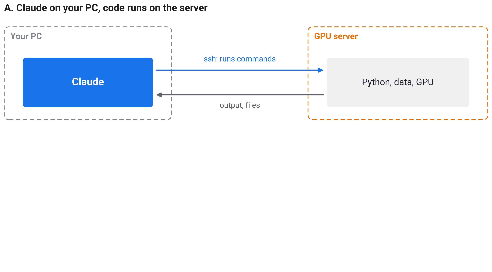
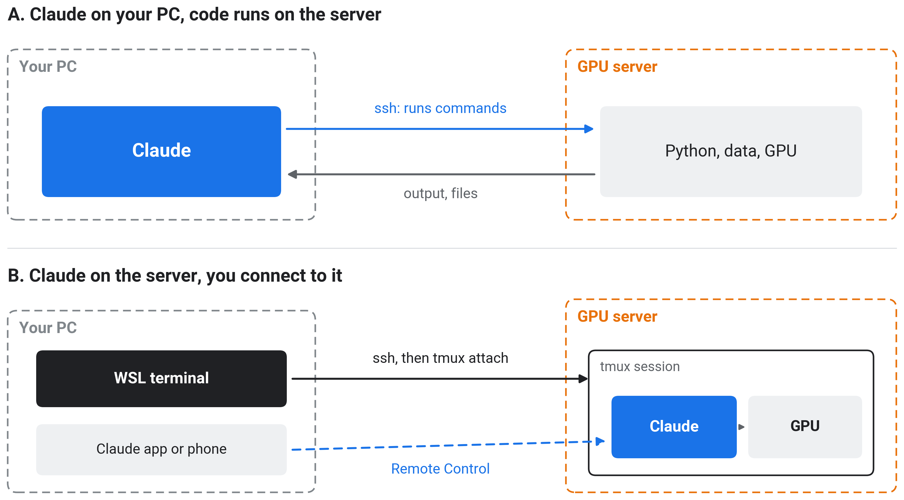
7.2 Nightly runs
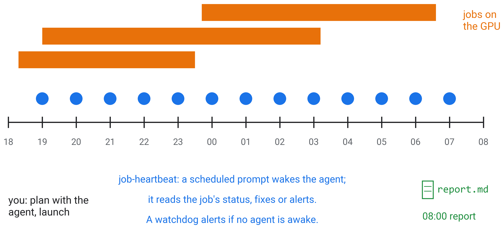
7.3 Tracking experiments: ClearML
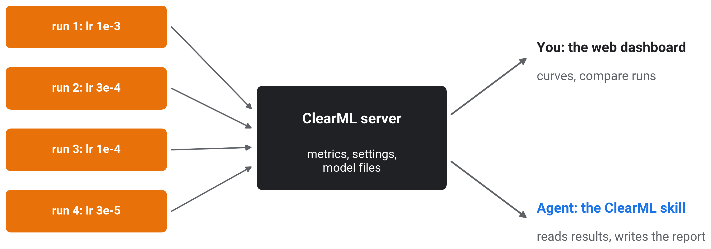
7.4 Data, secrets and the shared server
- What the agent reads goes to the model provider: unpublished lab data needs a decision first
- Secrets (tokens, clearml.conf, .env) stay out of the repository and out of the prompt
- One account and one login per person; no shared logins
- Raw data read-only: chmod -R a-w data/raw
- Never skip permissions on a shared machine
7.5 Demo: a DNA language model on the GPU
DEMO PROMPT
On the GPU server (use only GPU 1: CUDA_VISIBLE_DEVICES=1), embed the AGO2 sequences with the pretrained
DNA language model RaphaelMourad/Mistral-DNA-v1-17M-hg38. Convert U to T first. One vector per
sequence: the average of the last layer. Embed both the training and the held-out files.
Train a logistic regression on the training vectors and report the held-out AUROC, with the command
and output. Compare it with the CNN of Task 2 (0.87) and with GC and U alone (0.66).7.6 Links
- Claude Desktop: claude.ai/download
- Data: huggingface.co/datasets/yup8/ai-days-2026-ago2
- Figure skill: github.com/TingxiYu/academic-figure-skill
- The data’s source: Maticzka et al., Genome Biology 15, R17 (2014), doi:10.1186/gb-2014-15-1-r17